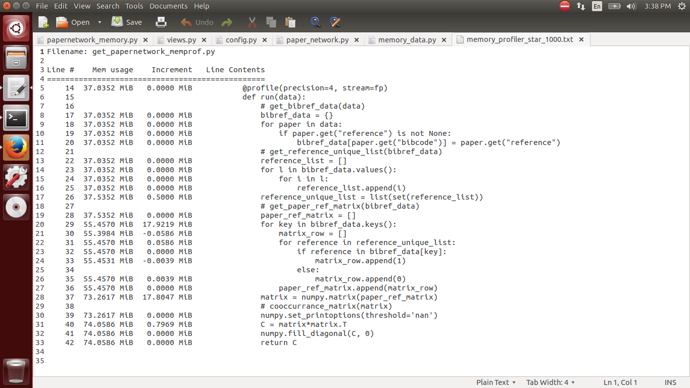
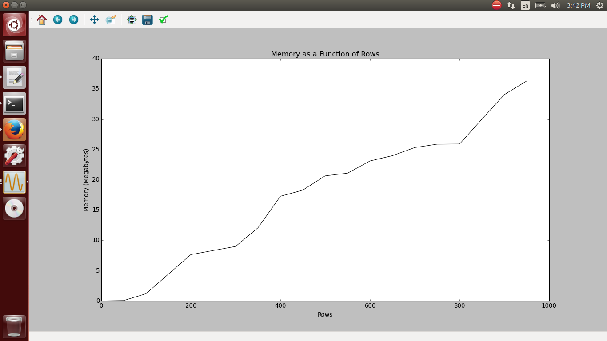
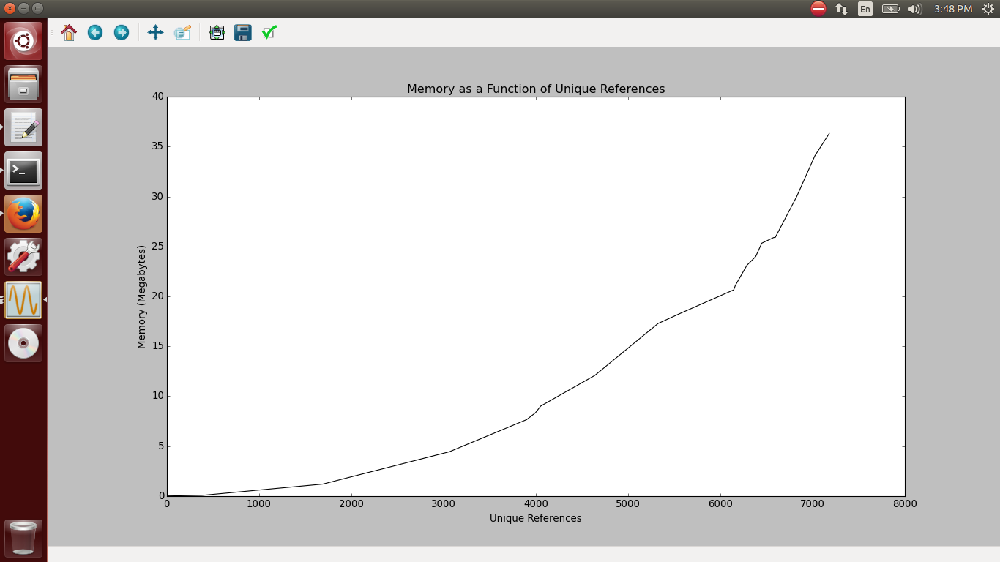
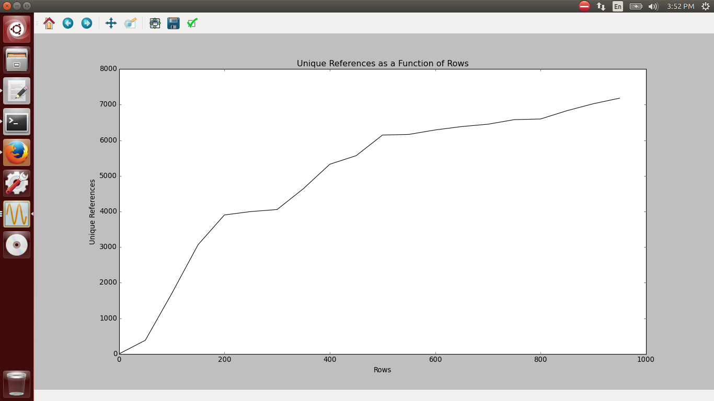
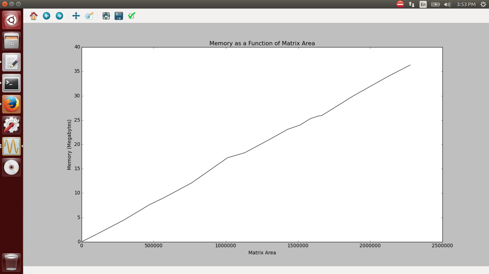
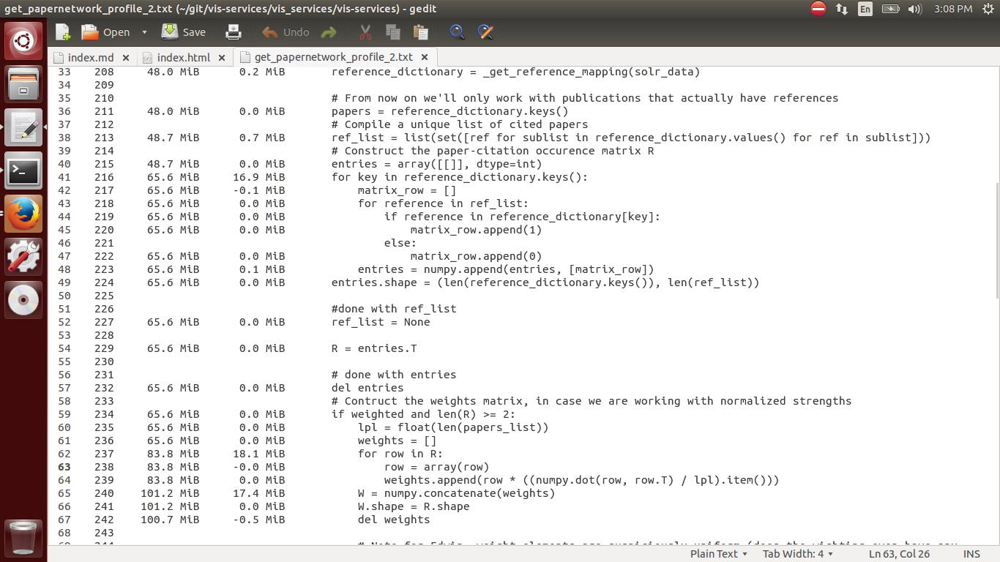

Code Optimization for the Astrophysics Data System -- Max Sours
My project was to optimize code in the Astrophysics Data System, or ADS.
The ADS is a literature discovery platform. One of the features of the ADS is to generate groups of papers with similar topics based on their co-occurrences with each other, and right now, the code to find those co-occurrences takes 10-20x the amount of memory relative to normal operations. My task was to figure out why and how we can improve the service.
When you search for papers, the application builds the paper network based on the amount of co-citations each paper has with each other. To do so, it constructs a matrix with papers on one axis and unique references on the other. With “0” if the paper does not have the reference and “1” if it does. Python sees a matrix as lists within a list, each list representing a row in the matrix, so the first part of the code creates lists within a list, then numpy converts the list into a matrix, then the regular matrix into a co-occurrence matrix. The co-occurrence matrix is then weighted by how often the references appear by subtracting a weights matrix from the co-occurrence matrix.
After familiarizing myself with the code and Python itself, I downloaded and imported memory_profiler, a python module that goes through the code line by line and analyses that line’s memory usage. The data comes back in a file, so I had to parse the file and then use matplotlib to create graphs of the memory usage, and here is what it gave back to me for 1000 papers and the search term “star”.

(Note that this code does not include the construction of the weights matrix or the weighting of the co-occurrence matrix.)
The first chunk of the program creates a dictionary of papers and a list of their respective references. The second chunk takes all of the references in that dictionary and creates a list of them, making sure none of the references repeat. Then the program constructs the list of lists and transforms it into a matrix. Finally, the program takes that matrix and returns the co-occurrence matrix.

This first graph has rows, or papers, on the x-axis and memory in megabytes on the y-axis. The graph is roughly linear, but it is unpredictable. Rows is also the variable the program currently uses to regulate its memory. If there was a better variable to use, then we could use that variable to reliably keep memory usage per user below a certain level.

The next graph still has memory on the y-axis, but now unique references, the length of the matrix rows rather than the amount of them, on the x-axis. This graph increases at an increasing rate, with small irregularities, but much less than memory as a function of rows. Why? The other graph was linear, while this graph is likely quadratic. The amount of unique references increases with rows, so shouldn’t this graph also be linear?

As this next graph shows, that is not the case. As rows increases, the increase in unique references decreases. Why? As you search up papers, they will, on average, have the same number of references. However, as you search up more papers, they are more likely to have the same reference as another paper, so the amount of unique references does not increase as much. Note that this graph is likely to be completely different for a different query. (For example, if we searched for “galaxy” instead of “star”.)

Here is a graph of memory as a function of matrix area. This graph strongly suggests the memory increases proportionally with matrix size. If we look back at the memory profile, we can see that the majority of the memory increase--around 96.5% of it--is in the creation of the matrix, so this graph makes sense. This graph also suggests that matrix area has the most direct influence on the memory usage, which makes sense, since the biggest jumps in the memory profile are during the creation of the matrix.
How do we fix this memory issue? If we limited the size of the matrix rather than the number of rows, we could reliably keep memory used per session below a certain amount. While this solution does not fix the memory issue, it does more reliably limit memory consumption.
The other solution is in the code itself. The memory shoots up twice--once when it creates the list of lists, and another time when it transforms that list into a matrix. If we were to reduce that to one step, the memory usage would be cut in half.
In the actual optimization, I converted all matrices to arrays, since arrays take less memory, are easier to work with, and can do matrix multiplication as well with numpy.dot. I shortened the creation of the paper-citation array from two steps to one. I also simplified the unique reference list from a dictionary to a list. I attempted to reduce the construction of the weights array from two steps to one, but the resulting memory usage was actually higher (~50MB) than it was before (two steps ~18MB each). Finally, I deleted the entries array, the transposition of the entries array, and the weights array when they were no longer needed so they would not take up extra memory. In all, my modifications reduced memory consumption from 83.6MB/query to 53.4MB/query, reducing memory usage by 36% (30.2MB/query).

Future work on this issue could be to enact my first suggestion--to limit queries by the size of the matrix they make. Note that this solution would require predicting the size of the matrix before constructing the matrix itself (since that would take more memory than limiting matrix size would prevent).
Another task could be to more fully understand the code that constructs the weights in order to cut down on memory without accidently causing a huge memory spike such as those that happened when I tried to improve the weights.